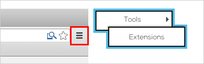
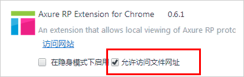

安装
Axure RP 为 Chrome的扩展插件
Chrome 或者类似基于Chrome开发的浏览器（比如360、猎豹等等）需要安装这个插件查看本地存储的原型，安装之后你会喜欢的。 另外您可以使用其他浏览器或者把原型发布到WEB服务器上比如 AxShare进行查看。
在Chrome中查看本地项目
1. 从Chrome Store安装扩展应用（免费）
2. 打开Chrome浏览器的扩展选项
3. 选择 "允许访问文件网址""
4. 点击下方按钮查看原型
没有互联网连接的如何安装扩展？
1.电脑上打开 Chrome，在地址栏输入 chrome://extensions/ 回车打开「扩展程序」页面
2. 拖动原型目录下的"resources/chrome/axure-chrome-extension.crx" 的文件到「扩展程序」页面空白处，Chrome 将提示你是否安装插件。
扩展程序常见问题
Q:什么是Chrome扩展程序？
A： 扩展程序可以添加到谷歌浏览器。
可以扩展额外的特性和功能，
Q:为什么我需要安装扩展？ A:这个扩展只是在用Chrome查看本地驱动器上存储的原型文件需要。原型文件放置在WEB服务器上着可以不用安装扩展应用。
Q:为什么这个扩展需要一个高级别的访问权限？ A:这是访问是必需的，因为原型的脚本和框架在本地文件夹内，通过file:// 协议（本地文件）访问。您大可放心，AXURE没有跟踪或访问您的任何信息。
问题与帮助
Chrome 需要安装这个扩展才能查看本地文件。.
还有问题？发邮件给Axure官方 support@axure.com.
更多Axure问题交流资源下载进入 产品经理聚集地.